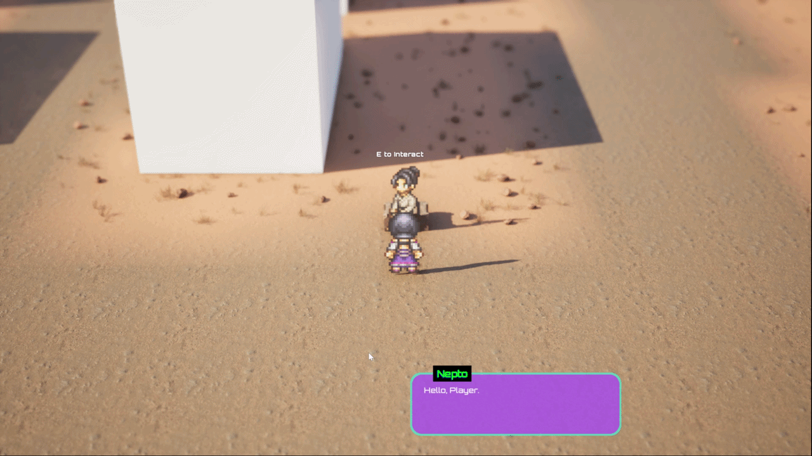
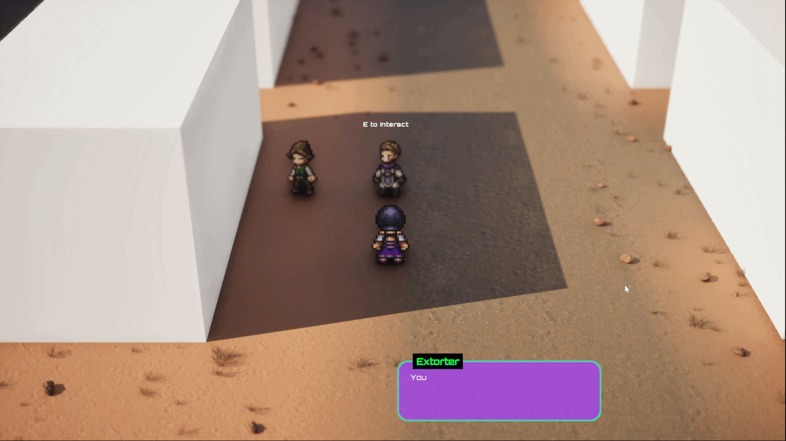

⚡ PROJECT PIXEL's: Quest System & Ambient NPCs ⚡
⚡ WORLD SYSTEMS OVERVIEW ⚡
🌍 A LIVING, RESPONSIVE WORLD
Project Pixel's world isn't static. Quests spawn enemies dynamically.
NPCs reposition based on active quests. Ambient NPCs trigger contextual dialogue tied to quest states.
Every system works together to make the world feel alive - like things are happening whether you're watching or not.
Two Core Systems:
1. Quest System - Spawns objectives, enemies, rewards. Tracks progress and completion.
2. NPC System - NPCs positioned dynamically. Dialogue triggered by quest state, not interaction.
1. Quest System - Spawns objectives, enemies, rewards. Tracks progress and completion.
2. NPC System - NPCs positioned dynamically. Dialogue triggered by quest state, not interaction.
⚡ COMPLETE WALKTHROUGH ⚡
Watch the complete walkthrough of the quest system and ambient NPC interactions in action that spans across two quests.
See how quests spawn enemies, how NPCs react to quest states, and how the world feels alive with dynamic content.
See how quests spawn enemies, how NPCs react to quest states, and how the world feels alive with dynamic content.
⚡ HOW SYSTEMS INTERACT ⚡
🔄 QUEST → NPC → DIALOGUE FLOW
Quest Started
↓
Quest Specifies NPC Positions
Nepto spawns near the crossroad the market waiting for player to interact.
Nepto spawns near the crossroad the market waiting for player to interact.
↓
Ambient NPCs Check Active Quests
NPCs read quest state, play contextual dialogue
NPCs read quest state, play contextual dialogue
↓
Player Sees Floating Dialogues
World acknowledges quest. NPCs react to progress.
World acknowledges quest. NPCs react to progress.
↓
Quest Completed
NPCs reposition. Dialogue changes. World reflects victory.
NPCs reposition. Dialogue changes. World reflects victory.
⚡ THE QUEST SYSTEM ⚡
📋 HOW QUESTS WORK
Quests are dynamic objectives that spawn enemies, define NPC positions, and offer rewards. They're the glue holding the world together.
🎯 QUEST 1: PRACTICE MAKETH PERFECT
PRACTICE MAKETH PERFECT
The quest starts in a nomad clan camp located in a desert on a festival day celebrating a solar eclipse. The protagonist needs to go to the training range to practice combat.
QUEST TRIGGER REQUIREMENTS:
Fresh save is required. The quest is automatically added on load.
GENERAL GAMEPLAY:
Reach the training grounds
Practice with combat dummy
The combat dummy performs basic moves with 0 damage output to the player, allowing safe training practice.
Rewards: 50 XP (Dummy Victory) + 100 XP (Quest Completion) + SHIELD Move + HEAL Move
COMBAT DUMMY MOVES
• Dumb Looks
• Squeaky Arm
• Blank Stare
• Squeaky Arm
• Blank Stare
After quest completion, Nepto (Son of the clan's chief) is spawned and his conversation triggers Quest 2.
🎯 QUEST 2: NUISANCE OF FIRE & ICE
NUISANCE OF FIRE & ICE
After training with the dummy, speak to Nepto, Son of the clan's chief, who tasks the player with solving an extortion racquet troubling the camp's merchants.
QUEST TRIGGER REQUIREMENTS:
Finish Quest 1. Finish Nepto's dialogue.
OBJECTIVES:
Speak to Nepto (Quest Trigger)
Teach bullies a lesson (0/2)
Speak to Nepto again after defeating bullies
Defeat the Extortion Racquet Leaders
Phase 1 - Bullies: Two bullies/extorters spawn near merchants. Defeat them in combat (basic punch moves only). They despawn after victory.
Phase 2 - Leaders: Two elemental leaders (Fire Guy uses Thermal attacks, Freeze Girl uses Cryo attacks) await at the animal shed. Defeat them to end the racquet.
Phase 2 - Leaders: Two elemental leaders (Fire Guy uses Thermal attacks, Freeze Girl uses Cryo attacks) await at the animal shed. Defeat them to end the racquet.
Total Rewards: 75 XP (Bully 1) + 75 XP (Bully 2) + 150 XP (Boss Victory) + 100 XP (Quest Completion) = 400 XP
BULLIES MOVES
• Punch
FIRE GUY MOVES
• Punch
• Thermal Kick
• Fire Blast (Ranged)
• Thermal Kick
• Fire Blast (Ranged)
FREEZE GIRL MOVES
• Punch
• Cryo Punch
• Freeze Wave (Ranged)
• Cryo Punch
• Freeze Wave (Ranged)
SPAWNS & NPC INTERACTIONS:
After speaking to Nepto, 2 Bullies are spawned near Ambient NPCs in level.
🔧 QUEST MECHANICS
Sequential Difficulty Progression
Quest 1 teaches basics with a harmless dummy.
Quest 2 eases players into combat with simple bullies, then escalates to elemental bosses. Each phase builds on learned mechanics.
Quest 2 eases players into combat with simple bullies, then escalates to elemental bosses. Each phase builds on learned mechanics.
Objective Tracking & NPC Gating
Quest progression requires speaking to NPCs at key moments. Nepto triggers the quest, provides information, and gates access to the final boss encounter.
Enemy Spawning & Despawning
Bullies spawn near merchants during phase 1 and despawn upon defeat. Leaders occupy the animal shed until defeated. Each combat victory advances the quest state.
Elemental Combat Introduction
Fire Guy and Freeze Girl introduce elemental attacks (Thermal, Cryo). Players experience different damage types and status effects, expanding combat depth beyond basic melee.
💬 NPCs THAT FEEL ALIVE 💬
Ambient NPCs aren't quest-givers. They're world inhabitants. They're positioned dynamically based on active quests. Their dialogue changes based on quest state. They're the world's voice-contextual, reactive, alive.
MERCHANT 01
AMBIENT NPC
When Quest: PRACTICE MAKETH PERFECT (ACTIVE)
Merchant 01 NPC is happy to give his children toys for festival
Hello Player!
I’m closing my shop early
My children are waiting for their toys.
I’m closing my shop early
My children are waiting for their toys.

When Quest: NUISANCE OF FIRE & ICE (ACTIVE)
Merchant 01 NPC explains extorter that he does not have any money
I can’t pay you money
Leave Me Alone
Leave Me Alone

MERCHANT 02
AMBIENT NPC
When Quest: PRACTICE MAKETH PERFECT (ACTIVE)
Merchant 02 NPC is happy to get some break because of festival.
Oh hello!
I’m closing the shop now
I need to get to home before the festival begins.
I’m closing the shop now
I need to get to home before the festival begins.

When Quest: NUISANCE OF FIRE & ICE (ACTIVE)
Merchant 02 NPC pleads with extorter that it's festival so she can't pay.
I don't have money
It's festival today.
It's festival today.

🗺️ NPCs as world lore
Ambient Lore
Ambient NPCs always have something to teach. For example in Quest 01, NPCs comment about festival that introduces clan's importance of solar eclipse.
Proximity Dialogue
When you approach an Ambient NPC with an active quest, they play contextual dialogue. You don't click to talk: you walk near them and see them react. This makes the world feel alive, not static.
State-Dependent Behavior
Each NPC has dialogue for different quest states: Initial encounter, in-progress, completion. Merchants express distress when bullies are active but show relief when the racquet is dismantled. NPCs are witnesses to your journey.
Ambient Context
Merchant NPCs (Daly, Martia) aren't quest givers, but they're victims. Their distressed dialogue provides context for why the quest matters. The world tells its own story through their voices.
💬 NPCs THAT PROGRESS YOUR STORY 💬
Interactable NPCs are positioned dynamically based on active quests. They are specific NPCs that serve the purpose to progress quests while building Narrative.
NEPTO
Quest 02 Giver
When Quest: PRACTICE MAKETH PERFECT (FINISHED)
Nepto is spawned.
Interacting with him will trigger a dialogue that gives Quest 02 to players.
Interacting with him will trigger a dialogue that gives Quest 02 to players.
Hello Player...
Nice moves you got there with that combat dummy. Shame to waste them to it.
Being the only son of clan chief comes with it's perks. I heard about an extortion racquet.
I would've taken care of them myself if not for this festival prep. Will you take care of those bully in my stead?
Nice moves you got there with that combat dummy. Shame to waste them to it.
Being the only son of clan chief comes with it's perks. I heard about an extortion racquet.
I would've taken care of them myself if not for this festival prep. Will you take care of those bully in my stead?

When Player defeats to Bullies
Nepto sees a bully running into cattle shed. Asks to finish this racquet once and for all.
I saw some bully running away
That cause of you?
Anyways... I'm thinking to end this once and for all
That bully ran towards cattle shed. I bet their leaders are there too!
Defeat them and show them who's the boss around here!
That cause of you?
Anyways... I'm thinking to end this once and for all
That bully ran towards cattle shed. I bet their leaders are there too!
Defeat them and show them who's the boss around here!

BULLIES/EXTORTERs
Quest 02 Enemies
When Quest: NUISANCE OF FIRE & ICE (ACTIVE)
Bully 01 is spawned in proximity of Merchant 01 NPC.
Interacting with them will trigger a dialogue that takes into their combat level.
Interacting with them will trigger a dialogue that takes into their combat level.
Your money is due, Daly
Do you want our protection? Or want a trashing?
GARHHH! Who are you?
Do you need a beating too?
Do you want our protection? Or want a trashing?
GARHHH! Who are you?
Do you need a beating too?
Player can respond with TRY ME or BACK
Selecting TRY ME will take to combat level.
BACK will bring players back to gameplay where they prepare for combat and interact with enemy again to continue combat
BACK will bring players back to gameplay where they prepare for combat and interact with enemy again to continue combat

When Quest: NUISANCE OF FIRE & ICE (ACTIVE)
Bully 02 is spawned in proximity of Merchant 02 NPC.
Interacting with them will trigger a dialogue that takes into their combat level.
Interacting with them will trigger a dialogue that takes into their combat level.
Pay up, Martia
I don't care if it's festival today
My bosses said they need money.
Mind your own business, Kid!
I don't care if it's festival today
My bosses said they need money.
Mind your own business, Kid!
Player can respond with I'LL MIND YOURS or BACK
Selecting I'LL MIND YOURS will take to combat level.
BACK will bring players back to gameplay where they prepare for combat and interact with enemy again to continue combat
BACK will bring players back to gameplay where they prepare for combat and interact with enemy again to continue combat

FIRE GUY and FREEZE GIRL
ENEMY NPC (BOSS)
AFTER
Quest: NUISANCE OF FIRE & ICE (ACTIVE)
DEFEATED BULLIES and SPOKE TO NEPTO
Quest: NUISANCE OF FIRE & ICE (ACTIVE)
DEFEATED BULLIES and SPOKE TO NEPTO
The Fire Guy and Freeze Girl are culmination of Quest 02 and will only spawn after defeating Bullies in market and speaking to Nepto
Fire Guy: So you are the one who kick Dusty's arse, eh?
Freeze Girl: Looking at the way she walked into our base..!
Both: SHE IS THE ONE!!!
Both: We will teach you a lesson!
Freeze Girl: Looking at the way she walked into our base..!
Both: SHE IS THE ONE!!!
Both: We will teach you a lesson!

🗺️ NPC POSITIONING
Dynamic Spawning
Combat Dummy spawns at the training grounds. Bullies appear near merchants in the market. Fire Guy and Freeze Girl are positioned at the animal shed. Each location is determined by quest activation.
Narrative Progress
When you approach a Quest NPC with an active quest, You can start conversation in a dialogue box that demands your reading attention.
Quest Dependent Behavior
Each Quest NPC are spawned/despawned based on the active quest and active objective. For Example in Quest 02, Bullies and Boss disappear after getting defeated.
⚡ DESIGN LEARNINGS ⚡
💡 KEY INSIGHTS FROM BUILDING QUEST & NPC SYSTEMS
Learning 1: Dynamic Spawning > Static Placement
Hardcoding NPC positions is rigid. Letting quests define positions creates flexibility. Different quests, different NPC locations. The map becomes dynamic, not static. One area serves infinite quest configurations.
Learning 2: Proximity Dialogue > Click-to-Talk
Walking near an NPC and hearing them speak feels more natural than clicking to trigger interaction. It makes the world feel conversational and present, not transactional. Dialogue should happen to you, not be requested by you.
Learning 3: State-Dependent Dialogue Creates Immersion
When NPCs have dialogue for each quest state (active, in-progress, completed), the world feels aware of your actions. NPCs don't just dispense quests-they react to you. This is the difference between quest-givers and a living world.
Learning 4: Enemies Spawn From Quests, Not The World
Enemies should only exist when quests activate them. This prevents the world from feeling overpopulated or arbitrary. Every enemy has a reason-they're part of a quest. This creates narrative cohesion.
Learning 5: NPC Dialogue Can Be Ambient Without Being Optional
Ambient dialogue doesn't mean it's ignorable. It's essential world narration. Players overhear it. It provides context. It makes the world feel like it's talking to itself, not just at the player. This is where personality emerges.
Learning 6: Quest Objectives Are The World's Pacing
Objectives aren't obstacles-they're story beats. Defeat 3 sentries. Destroy the barricade. Report back. Each step updates the world state. NPCs react to each completion. Pacing is driven by the quest system's awareness of progress.
Learning 7: The World Reorganises Around Active Quests
This is the key insight: don't author a static world. Author quest configurations. Each quest is a temporary world state. When activated, it shapes NPC positions, enemy spawns, available dialogue. Multiple quests create multiple worlds from the same map.